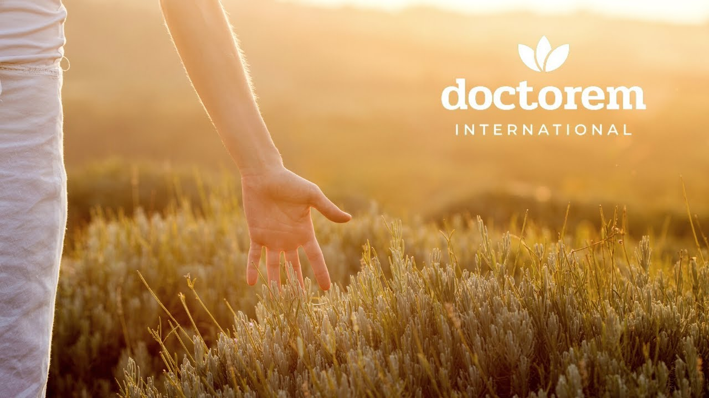
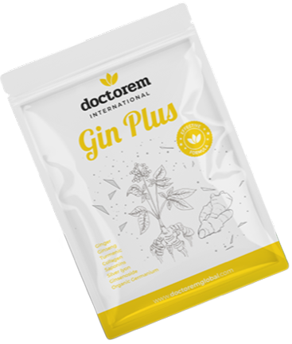
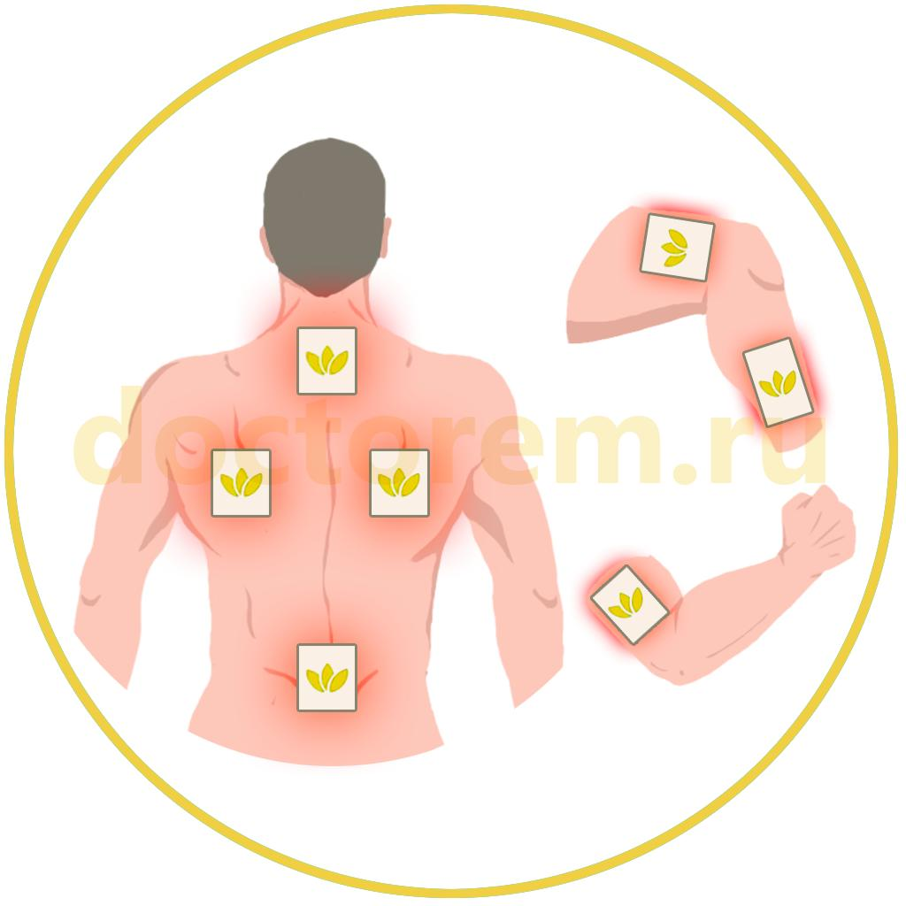
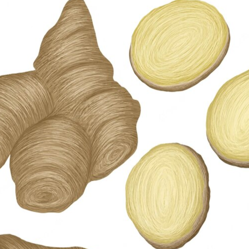
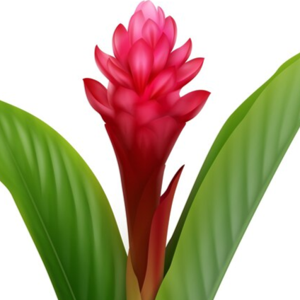
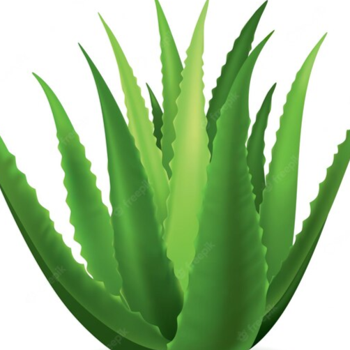
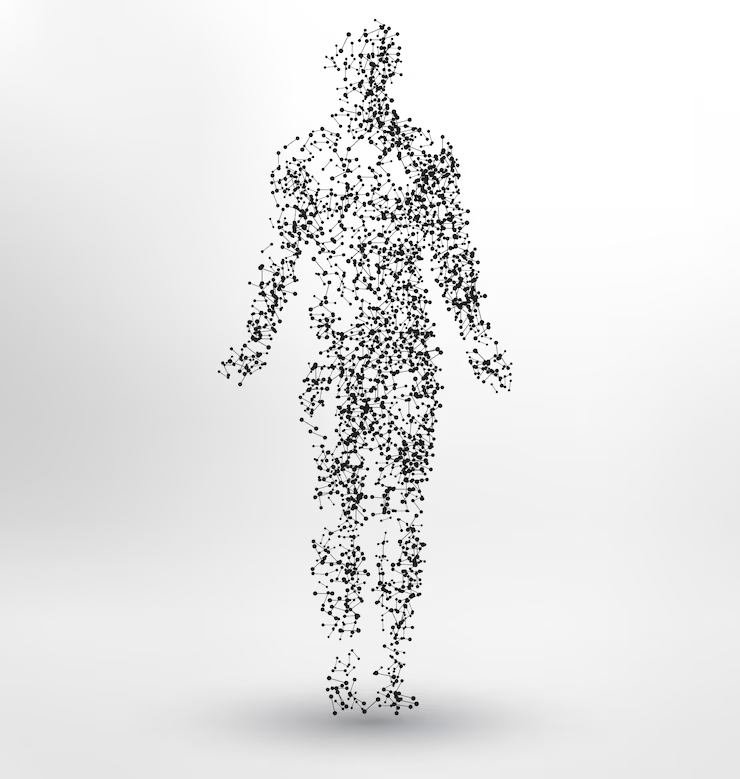

Gin Plus
2000 р.

ОПИСАНИЕ:
Gin Plus - это продукт, произведенный из комплекса ингредиентов, имеющих природное происхождение с высоким качеством обработки.Благодаря специальному составу, разработанному Doctorem, этот пластырь имеет отличные результаты в применении, особенно при решении проблем с иммунитетом, суставами и пищеварением.
ОБЛАСТЬ ПРИМЕНЕНИЯ:
- помогает при заболеваниях суставов и позвоночника;
- восстанавливает кровяное давление;
- оказывает положительное действие на работу пищеварительной системы;
- оказывает помощь при диабете;
- укрепляет иммунитет и помогает в борьбе с вирусами и микробами;
- улучшает состояние кожи.
СРОК ЭФФЕКТИВНОГО ВОЗДЕЙСТВИЯ:
48 часа с момента нанесения.СОДЕРЖИМОЕ УПАКОВКИ:
25 пластырей 130х94 мм.СОСТАВ АКТИВНОГО ВЕЩЕСТВА:
ЗОНЫ НАНЕСЕНИЯ:
Достаточно наносить один пластырь за раз. В случае необходимости нанесения на несколько зон, пластырь можно разрезать на части. Замену пластыря рекомендуем производить через каждые 2 дня.- задняя сторона шеи;
- лопатки;
- поясница;
- верхняя часть руки;
- бедро и голень;
- а также на источники боли: коленные, локтевые и другие суставы.

ОПИСАНИЕ АКТИВНЫХ ЭЛЕМЕНТОВ

Женьшень
- это природная кладезь полезных веществ. Женьшень использовался людьми еще с самых древних времен, исследования, проведенные во второй половине прошлого века, позволили досконально изучить женьшень, его свойства были подтверждены официальной медициной.Основным эффектом женьшеня является его сильное тонизирующее действие. Экстракт женьшеня при регулярном применении может повышать работоспособность и уменьшать утомление при больших физических нагрузках и во время напряженных стрессовых ситуаций.
Воздействие женьшеня на сердечно-сосудистую систему также достаточно выражено. В небольших дозах женьшень может повышать уровень артериального давления. Под его влиянием уменьшение частоты сердечного ритма, а амплитуда сердечных сокращений увеличивается.
Также женьшень способен улучшать кровоснабжение мозга и кроветворение. В исследованиях отмечались также его антидиуретические свойства и влияние на выработку половых гормонов.
Широкий спектр фармакологических свойств женьшеня определяет его популярность как в народной, так и в официальной медицине. Женьшень может применяться не только как общеукрепляющее и тонизирующее средство, но и как препарат для лечения различных астенических и депрессивных состояний.
Применение женьшеня рекомендуется во время послеоперационного периода, после тяжелых заболеваний или затяжных осложнений разного происхождения.

Имбирь
- его польза во многом связана с его антиоксидантными и противовоспалительными свойствами, а также наличием таких терапевтических соединений, как гингерол, шогаол, парадол и зингерон. На самом деле, из имбиря можно выделить более 100 соединений, которые наделяют его антиоксидантными, противораковыми и нейропротекторными свойствами.

Куркума
Родом из Индии, куркума богата целебными свойствами. Она помогает устранить проблемы с пищеварением, такие как вздутие живота, расстройство желудка, тошнота и газообразование.Она стимулирует выработку желудочного сока, который поможет слизистой оболочке желудка предотвратить негативные действия бактерии Хеликобактер пилори.
Также обладает противовоспалительными и антиоксидантными свойствами, улучшает работу мозга, снижает риск сердечно-сосудистых заболеваний и развития рака. Куркума может использоваться в профилактике болезни Альцгеймера, помогает при артрите и борьбе с депрессией, а также замедляет процессы старения в организме.

Алоэ вера
В его составе более 270 различных химических соединений. Сюда входят не только минералы, витамины и аминокислоты, столь необходимые организму, но и другие растительные вещества:Антрахионины - благодаря им мякоть и сок алоэ обладают мягким слабительным эффектом.
Глюкоциды и изобартолоины – активные защитники организма, убивающие микробы и вирусы.
Антранолы – активаторы кислородного обмена клеток.
Аллонтоины – повышают упругость кожи и насыщают её влагой.
Помимо этих веществ, содержит эфирные масла, сапонины и другие полезные кислоты.
Коллаген
- это важный белок для организма, обладающий рядом уникальных свойств. Благодаря ему улучшается состояние кожи, она разглаживается, становится упругой и привлекательной. Коллаген помогает нормализовать вес, пищеварение, восстанавливает сон, придает силу и бодрость.

Ионы серебра
Об обеззараживающих свойствах серебра известно с древних времен.Ионы серебра обладают бактерицидным, противовирусным, выраженным противогрибковым и антисептическим действием и служит высокоэффективным обеззараживающим средством в отношении патогенных микроорганизмов, вызывающих острые инфекции.
Ионы серебра обладают выраженной способностью инактивировать вирусы осповакцины, гриппа штаммов А-1, В, некоторых энтерои аденовирусов, а также ингибировать вирус СПИДа.
Глюкозамин и хондроитин
- естественные компоненты суставного хряща. Нормализуют отложения кальция в суставах, снижают риск развития остеопороза. Стимулируют процессы заживления и подавляют активность ферментов, разрушающих хрящевую ткань. Проявляют антиоксидантные свойства, способствуя замедлению процессов старения. Оказывают умеренное противовоспалительное и обезболивающее действие. Уменьшают выраженность воспалительного процесса и болевые ощущения, улучшают подвижность суставов и позвоночника.Снижают потребность в использовании нестероидных противовоспалительных препаратов (НПВП) и глюкокортикостероидов (ГКС).
Стимулируют синтез гиалуроновой кислоты - главного компонента синовиальной жидкости суставного хряща. Обеспечивают скольжение и снижают механическую нагрузку, улучшая подвижность суставов.
Метилсульфонилметан (МСМ)
- органическое серосодержащее соединение, входящее в состав соединительной ткани. Способствует более быстрому восстановлению суставов и мышц после физической нагрузки, обладает противовоспалительным, антиоксидантным, антиаллергенными свойствами.Корица
- укрепляет иммунитет, обладает противовоспалительными и кровоостанавливающими свойствами, улучшает память и помогает бороться с болезнью Альцгеймера. Также пряность положительно влияет на работу сердечно-сосудистой системы: снижает уровень холестерина ЛПНП (липопротеины низкой плотности) и триглицеридов, при этом оставляя "хороший" холестерин ЛПВП (липопротеины высокой плотности) стабильным; разжижает кровь и снижает кровяное давление. Корица эффективна как противовирусное и антибактериальное средство, повышает концентрацию внимания и улучшает зрение.Корица может улучшить способность к обучению, а также быть эффективной при болезни Паркинсона. Кроме того, корица защищает от рака толстой кишки.